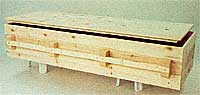

Bits and Pieces
Death with dignity.
Mineral Creek wanders through a ranch in Jackson County, Iowa, where Sam Mulgrew runs forty head of Charolais cattle. In most places, Mineral Creek is too deep or wide for crossing. Out of this daily challenge, Mulgrew gave his ranch the name Mineral Crossing. Mineral Crossing is a bucolic place, dense trees covering rolling hills, and at Mulgrew's invitation, Iowans have begun to pilgrimage through its peaceful hills to contemplate life and, in many cases, death. They come for silent meditation in one of the hermitages Mulgrew built, and they come to learn how to make simple pine caskets for themselves and for their loved ones.
"I want to retrieve that sense of authentic ritual that we've lost. Death has become so institutionalized and guided by profiteering that people don't grieve," says the Iowa rancher and casket-maker. He has already helped three people start small cottage industries in casket-making. His own casket business, started a little over a year ago, has been growing steadily and subsidizes his ranching and not-for-profit retreat center.
"I always wanted to do this," Mulgrew says. "When I was younger and I went to funerals with my family, I would think 'these caskets are excessively ornate, cheaply-made, mass-produced, over-priced.' Basically they reflect the things that I dislike about our civilization."
For most of us, when someone we love dies, nothing seems less important than money. No one knows this better than the funeral industry, which is why you'll find few alternatives to the standard overpriced, garish coffin. Mulgrew's window of opportunity came in 1994 thanks to a Federal Trade Commission crackdown on fire funeral industry. Now morticians must use the casket you provide without objection and without charging a handling fee. Mulgrew says his business is about 10% casket-making and 90% education. For example, his brochures will inform you that in some areas it is perfectly legal to bury your loved ones on your own rural property. Further, in many cases, embalming is not required, and it is not always necessary to go through a funeral provider. "My customers are fairly strong willed with above-average intelligence. They're not going to let a mortician tell them what to do.
The average cost of a funeral in the U.S. is $3,000 to $5,000, with the casket being the greatest expense. Mineral Crossing offers six simple styles of hand-crafted casket, none of them garish. The most common rectangular pine or cedar caskets sell for $650. The basic standard size is 79 inches long, 25 inches wide and 16 inches deep. Other types of caskets, from economy to custom-shaped, range from $395 to $1,250. Prices include muslin liner. rope or wooden handles, and delivery in eastern Iowa. Delivery outside Iowa costs $100. The caskets are held together by dowels and glue and contain no metal or nails. For $400 you can get a kit with materials and instructions for building your own casket. However, Mulgrew says this method is best for people who know something about woodworking. And, he says, it's almost as easy for these people to buy the materials themselves.
If you want to team the an of casket-making, whether to make a casket for yourself or a loved one or to start a small business, Mulgrew would be happy to teach you how he does it. He'd like to see a regional casket-maker in every part of the country. Indeed, there may be a market everywhere for a simple handcrafted pine casket.
The casket-making business subsidizes Mulgrew's budding non-profit retreat center on Mineral Crossing's 640 acres where he provides facilities for people to come and spend time in solitude. He has built two hermitages, and hopes eventually to build five, in secluded spots throughout his inviting property. There is no fee to stay in the hermitages, and Mulgrew and his wife provide visitors with homemade bread. Providing people a place for solitude and reflection is not about money. On the contrary, says Mulgrew, "It's the one thing I can do in this world."
|
 |
|
|